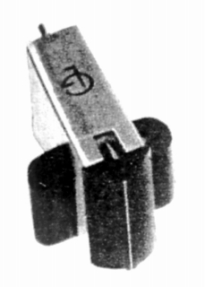
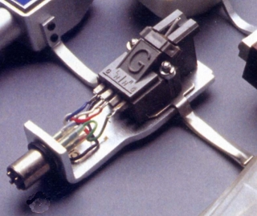
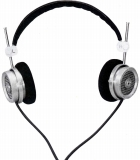
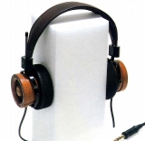

GRADO (グラド)
フェアチャイルド社のチーフエンジニアだったジョセフ・グラド氏が1955年に独立して設立したアメリカのメーカー。アナログディスク関係で有名で、独自形式のMC型開発で知られる。
ヘッドフォンが紹介されるまでは、カートリッジが国内に紹介されていた。MCカートリッジが有名だが、1970年代に大別するとMI型の一種であるフラックスプリージャ型発電方式のカートリッジに移行している。当初はSHUREなどと同様に1万円を切る比較的リーズナブルな機種も存在した。つくりが非常に大ざっぱなこと、ロックを得意としたことは今日のヘッドフォンとどこか共通する意見であった。


（左 MCカートリッジ TYPE-A 右 1970年代の型式不明のカートリッジ FCR/FTR/FCEのいずれか）
ヘッドフォンについては1980年代後半にHP-1000を開発し、録音モニターとして好評を得た。輸入代理店は当初はユニコエレクトロニクス、後に現在の代理店、ナイコムになった。
GRADO (グラド) の製品を以下のように分類する。（この分類は個人的な意見で、メーカーの分類ではありません）
�T.第１世代のモデル（ジョセフ・グラド氏の時代の製品）
1990年代に入り、HP-1000が紹介された。今日ではHP-1,2,3として知られるモデルである。当初紹介された時には、ヘッドフォン端子ではなく、スピーカー端子に付属のアダプターで接続することが推奨されていた。やがてHP-1000/2の名称で扱われる頃には、専用アンプHPA-1が紹介された。ナポレックス等で先例はあるが、AKGのK1000+K1000AMPとともに、ヘッドフォン専用アンプの先駆的モデルであった。
HP-1000(HP-1,2,3) SR-100 SR-200 (SR-300が存在するらしいが、輸入されたか不明）

(HP-1000)
�U.第2世代のモデル
1995年にＳＲ-60、1997年にRS-1が導入された。両モデル10年以上のロングラン商品となった。この世代の機種は直系の後継モデルが現在（2021/6月）も続いている。（RS1eとSR60x）
